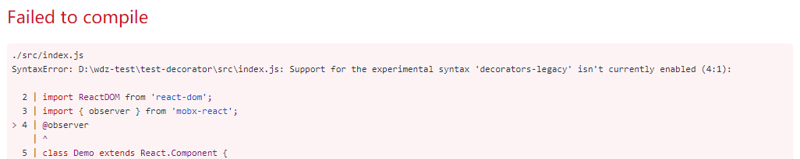
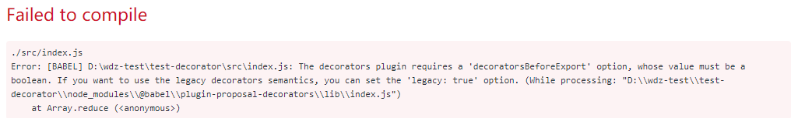
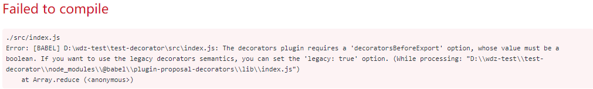

背景：
想要在 create-react-app 中使用 mobx，因为装饰器模式看起来简单，所以想让 create-react-app 支持装饰器语法。
项目搭建
1 | create-react-app test-decorator |
安装完毕后，若直接在 class 中使用 mobx 的@observer 语法
1 | import {@observer} from 'mobx-react'; |
此时会报编译错误

所以需要使用 babel 让编译时能支持装饰器语法。
ps：create-react-app 可以使用其他方式支持装饰器语法，这里只提供一种简单粗暴的形式-弹出。
弹出 create-react-app 的项目
1 | npm run eject |
发现出了点小意外:
mobx 不应该先装，eject得在工作区没有改动时启用，不然会弹出失败。
于是先提交工作区的改动
1 | git commit -a -m "init" |
然后再次 eject
安装@babel/plugin-proposal-decorators
1 | npm install --save-dev @babel/plugin-proposal-decorators |
在package.json中加上
1 | { |
此时运行报错

加上decoratorsBeforeExport：
1 | ["@babel/plugin-proposal-decorators", { "decoratorsBeforeExport": true }], |
报错：

改成
1 | { |
成功!!!
猜测和我的下面的写法有关，装饰器挂在头部怪怪的
1 | @a |
好像大佬们认为下面这样更好一点
1 | export @a class B |